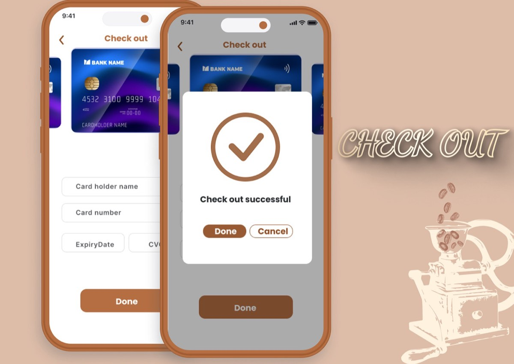
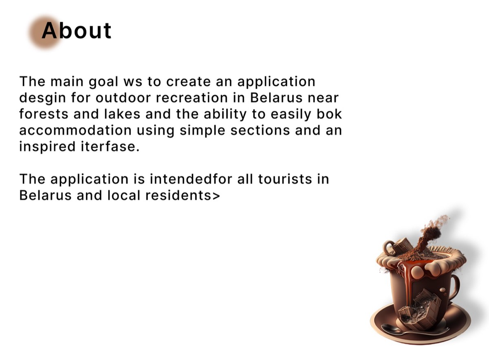
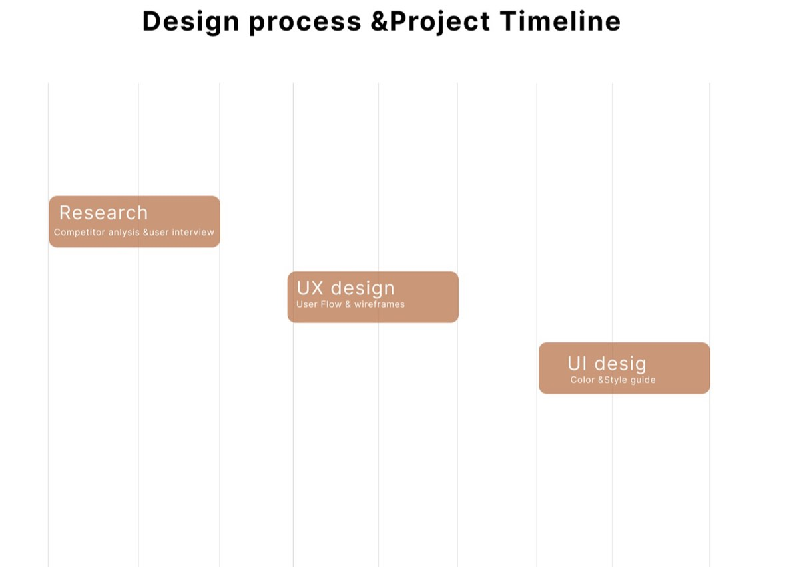
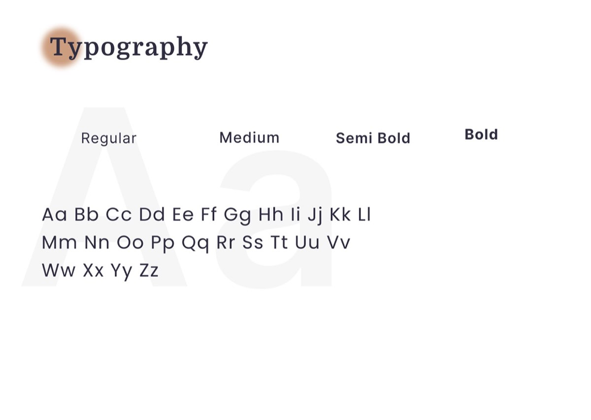
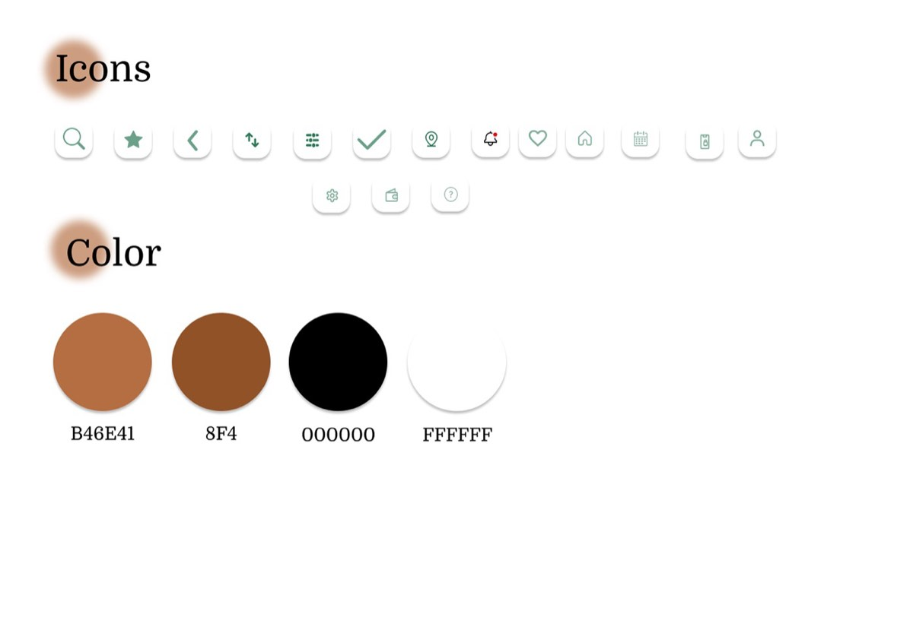
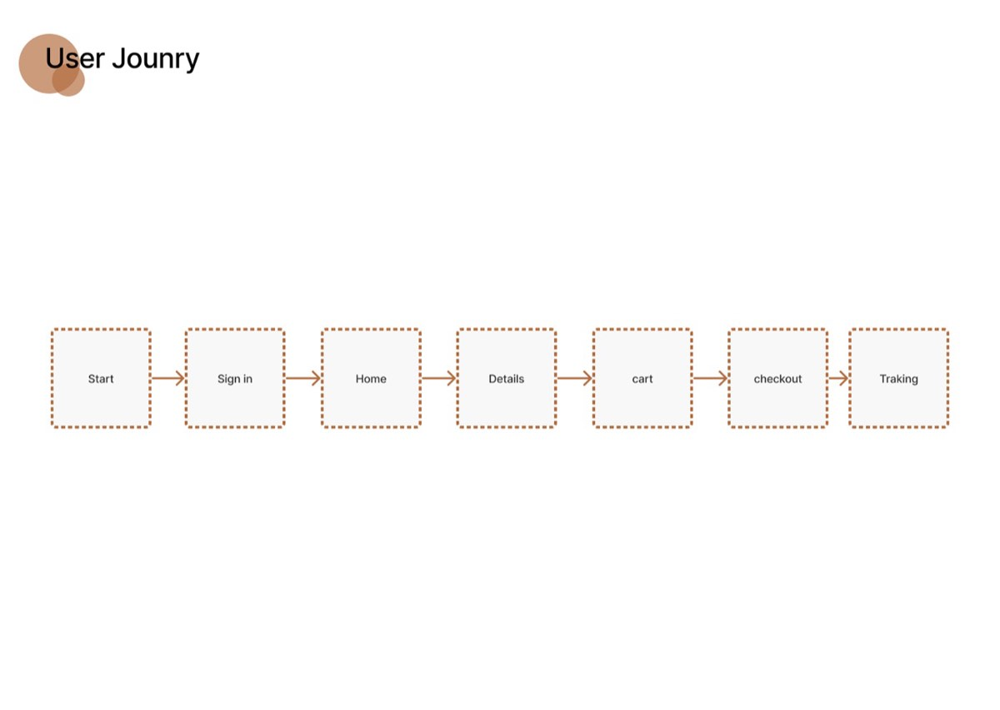

اطلب قهوتك المفضلة، وتابعها على الخريطة، وادفع بضغطات قليلة.
تطبيق لطلب القهوة يغطي الرحلة كاملة: تسجيل الدخول، تصفّح قائمة المشروبات الساخنة والمثلّجة، اختيار الحجم، الإضافة للسلة، الدفع بالبطاقة وتتبّع التوصيل مباشرة.
يستخدم التصميم ألوان القهوة البنية الدافئة وتخطيطات بسيطة ليتم طلب المشروب بضغطات قليلة.
ساخن ومثلّج ومخبوزات مع التقييمات والأسعار.
المكونات والتقييم واختيار الحجم قبل الإضافة للسلة.
نموذج بطاقة واضح وشاشة نجاح.
تابع المندوب على الخريطة مع الوقت المتوقع.





15 لوحة · البحث ورحلات المستخدم ونظام التصميم وكل الشاشات






